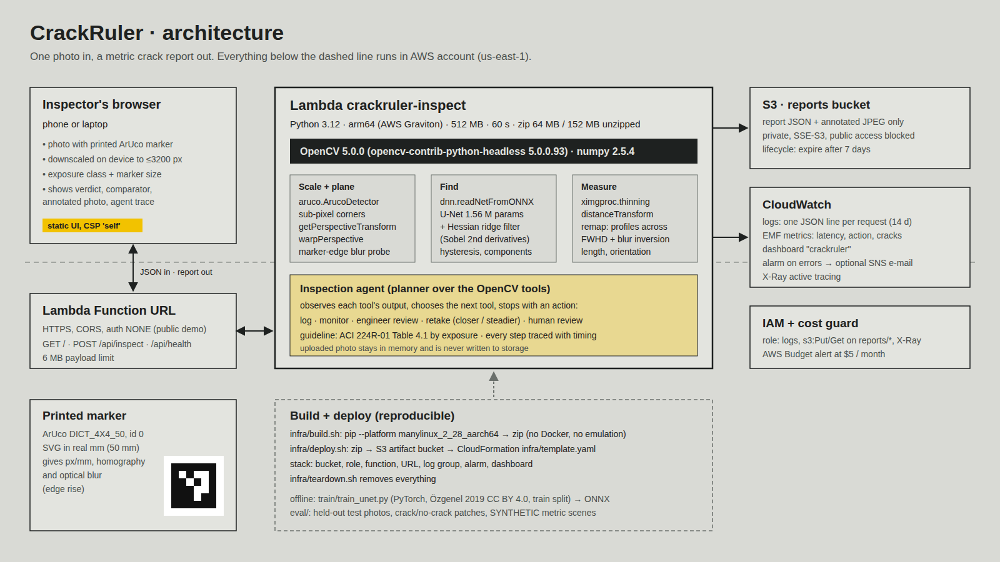
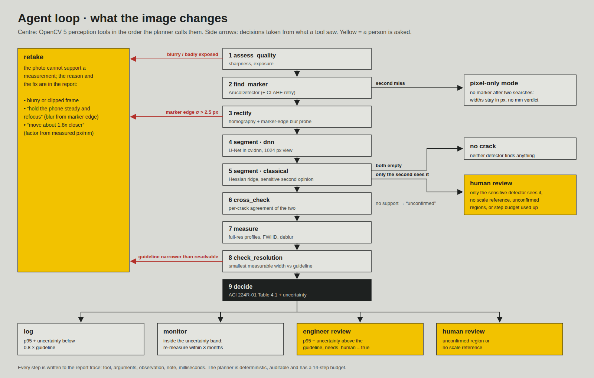

Concrete crack widths in millimetres from one phone photo and a printed marker.


| test | data | result |
|---|---|---|
| Crack pixels, U-Net in OpenCV 5 DNN | 69 held-out real photos | F1 0.937 IoU 0.757 |
| Crack pixels, classical ridge filter | same 69 photos | F1 0.930 IoU 0.696 |
| Width in mm, end to endSYNTHETIC | 84 scenes, known width, 0–30° tilt, blur, JPEG | ≤ 0.045 mm mean error, cracks ≥ 2.4 px across |
| Where it fails | cracks under ~2 px across | overestimated → review; 0.1 mm not detected |
github.com/ctmakc/crackruler